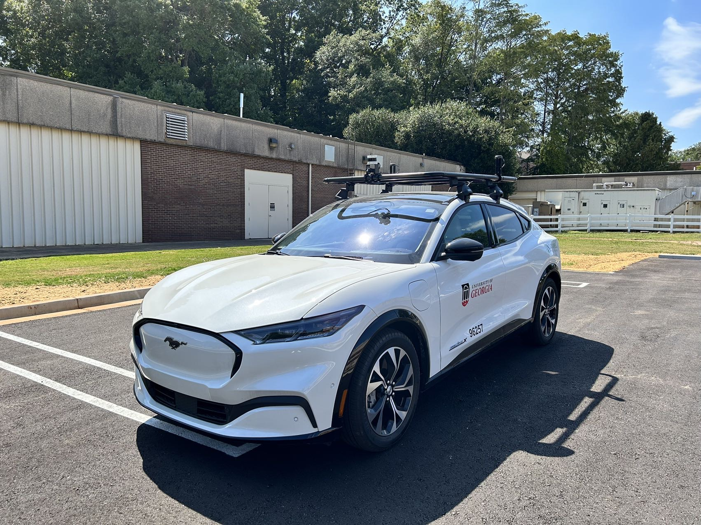

University of Georgia · Athens, GA

Cooperative
Automated
Mobility
Innovations
Advancing knowledge and technologies that enhance transportation safety, sustainability, and efficiency — bridging data, theory, and real-world practice.

Fully Automated
100% Electric